lorenz_partial_25d_additive_mse_uniform_p30_obsnoise001__enchd_lc_sweepProject: Lorenz_INDpartial_N25_D1_NormTrue_T3__JacobianODE
Launched: 2026-04-17T21:05:11Z
Completed: 2026-04-18T11:45:21Z
Outcome: complete_clean
Git: latent-JacobianODE @ 5051646
Expected runs: 40
lorenz_partial_25d_additive_mse_uniform_p30_obsnoise001__enchd_lc_sweepDescription
Same base as lorenz_partial_25d_additive_mse_uniform_p30 with obs_noise=0.01. Sweeps model.encoder.hidden_dim over {32, 64, 128, 256, 512} × the standard 9-value loop_closure_weight grid (2-D sweep, 45 runs).
Hypothesis
The encoder's per-coupling-layer MLP width (default 128) may be capacity-limited in expressing the diffeomorphism between the 25-D delay-embedded obs and the 3-D dyn latent subspace. If so, larger hidden_dim should improve reconstruction, dyn-only cycle consistency, and λ_min accuracy up to some plateau; smaller hidden_dim (32, 64) should underfit and produce looser diffeomorphisms. If capacity is not the bottleneck, results should be flat across hidden_dim.
Success criteria
Swept axes (2): model.encoder.hidden_dim, training.lightning.loop_closure_weight
Chosen run (by best_traj_loss): 1wwirh60 — traj_loss=0.00089, MASE=0.6698, R²=0.9976, LC loss=1.610, epoch=165.0
Swept-axis values at chosen run: model.encoder.hidden_dim=64 · training.lightning.loop_closure_weight=0
Runs analyzed: 41
| run_id | model.encoder.hidden_dim |
training.lightning.loop_closure_weight |
best_traj_loss | best_MASE | R² | LC loss | epoch |
|---|---|---|---|---|---|---|---|
1wwirh60 |
64 | 0 | 0.00089 | 0.6698 | 0.9976 | 1.610 | 165.0 |
ll5xx3rc |
256 | 1.0e-04 | 0.00090 | 0.6545 | 0.9976 | 0.120 | 157.0 |
r2lznj4b |
512 | 1.0e-05 | 0.00097 | 0.6413 | 0.9974 | 0.207 | 180.0 |
96wzp7ax |
256 | 1.0e-06 | 0.00114 | 0.7041 | 0.9970 | 0.769 | 105.0 |
lsg9vpxt |
256 | 0 | 0.00114 | 0.6714 | 0.9970 | 0.615 | 138.0 |
xotytukg |
128 | 1.0e-05 | 0.00115 | 0.6816 | 0.9969 | 0.305 | 152.0 |
vxsqq8n3 |
64 | 1.0e-06 | 0.00123 | 0.7193 | 0.9967 | 1.122 | 109.0 |
fyzhn6mb |
512 | 0 | 0.00128 | 0.7394 | 0.9966 | 1.165 | 106.0 |
rha3kf0k |
128 | 1.0e-06 | 0.00128 | 0.7177 | 0.9966 | 1.076 | 110.0 |
ftu91y8t |
64 | 1.0e-04 | 0.00130 | 0.7183 | 0.9966 | 0.163 | 130.0 |
joj7z0t2 |
512 | 1.0e-04 | 0.00132 | 0.7608 | 0.9965 | 0.123 | 104.0 |
5px1rlbp |
128 | 1.0e-04 | 0.00132 | 0.7287 | 0.9965 | 0.181 | 110.0 |
njrxgz11 |
64 | 1.0e-05 | 0.00133 | 0.7311 | 0.9965 | 0.879 | 107.0 |
6cp0rz4y |
32 | 1.0e-05 | 0.00157 | 0.7948 | 0.9958 | 0.478 | 193.0 |
bx4cgk4y |
128 | 0.001 | 0.00166 | 0.7891 | 0.9956 | 0.022 | 111.0 |
ufx598w7 |
512 | 0.01 | 0.00225 | 0.9313 | 0.9940 | 0.002 | 88.0 |
idpmocmw |
64 | 0.01 | 0.00234 | 0.9395 | 0.9938 | 0.005 | 102.0 |
50nbcet4 |
256 | 0.01 | 0.00236 | 0.9256 | 0.9937 | 0.009 | 103.0 |
0mpwbqk7 |
32 | 0 | 0.00242 | 1.0772 | 0.9936 | 1.624 | 167.0 |
maqs3088 |
128 | 0.01 | 0.00245 | 0.9229 | 0.9935 | 0.002 | 102.0 |
bhrkc679 |
512 | 1.0e-06 | 0.00252 | 0.8623 | 0.9932 | 0.243 | 57.0 |
jy9nxbxe |
256 | 0.001 | 0.00285 | 0.9935 | 0.9924 | 0.008 | 55.0 |
7t07kkzf |
256 | 1.0e-05 | 0.00302 | 0.9317 | 0.9919 | 0.122 | 47.0 |
lv4lufoq |
32 | 1.0e-06 | 0.00303 | 1.1477 | 0.9919 | 1.609 | 107.0 |
4nz0p544 |
128 | 0 | 0.00380 | 1.1892 | 0.9898 | 0.846 | 28.0 |
2d48iu8o |
32 | 1.0e-04 | nan | nan | nan | 1.126 | — |
j8xqwvh5 |
32 | 0.001 | nan | nan | nan | 0.228 | — |
mjx53oh9 |
256 | 0.1 | 0.00281 | 1.0286 | 0.9925 | 0.000 | 143.0 |
wsy55cmp |
128 | 0.1 | 0.00312 | 1.0479 | 0.9916 | 0.000 | 163.0 |
i9qfgypj |
512 | 0.1 | 0.00322 | 1.1309 | 0.9914 | 0.000 | 100.0 |
syjwl5ic |
256 | 1 | 0.00409 | 1.2506 | 0.9890 | 0.000 | 105.0 |
o9aszdui |
64 | 0.1 | 0.00440 | 1.2301 | 0.9882 | 0.001 | 99.0 |
x2te15ug |
128 | 1 | 0.00536 | 1.4571 | 0.9856 | 0.000 | 90.0 |
5w7bdslv |
64 | 1 | 0.00644 | 1.5314 | 0.9828 | 0.000 | 92.0 |
ueimwt6w |
512 | 1 | 0.00954 | 1.8943 | 0.9744 | 0.000 | 44.0 |
33f4ymvo |
32 | 0.01 | 0.01323 | 2.1832 | 0.9647 | 0.004 | 30.0 |
x4p8zlr9 |
32 | 0.1 | 0.01798 | 2.7755 | 0.9521 | 0.000 | 26.0 |
cat8nkrd |
64 | 0.001 | 0.01985 | 2.8201 | 0.9471 | 0.016 | 12.0 |
ilucchni |
32 | 1 | 0.07856 | 6.4587 | 0.7905 | 0.000 | 17.0 |
uuso2tr7 |
512 | 0.001 | 0.09673 | 6.9480 | 0.7421 | 0.005 | 2.0 |
z5zzf7v3 |
32 | 0.001 | nan | nan | nan | 0.228 | — |
| Criterion | Verdict | Note |
|---|---|---|
| Val traj_loss non-increasing from hidden_dim=32 up to some plateau | Unknown | |
| λ_min accuracy (vs empirical ~-13.9) improves monotonically with hidden_dim up to the same plateau | Unknown | |
| Best LC location is roughly stable across hidden_dim (no capacity × LC reversal) | Unknown |
Automated verdicts use simple numeric-threshold parsing and may mis-classify qualitative criteria. The Discussion section below takes precedence.
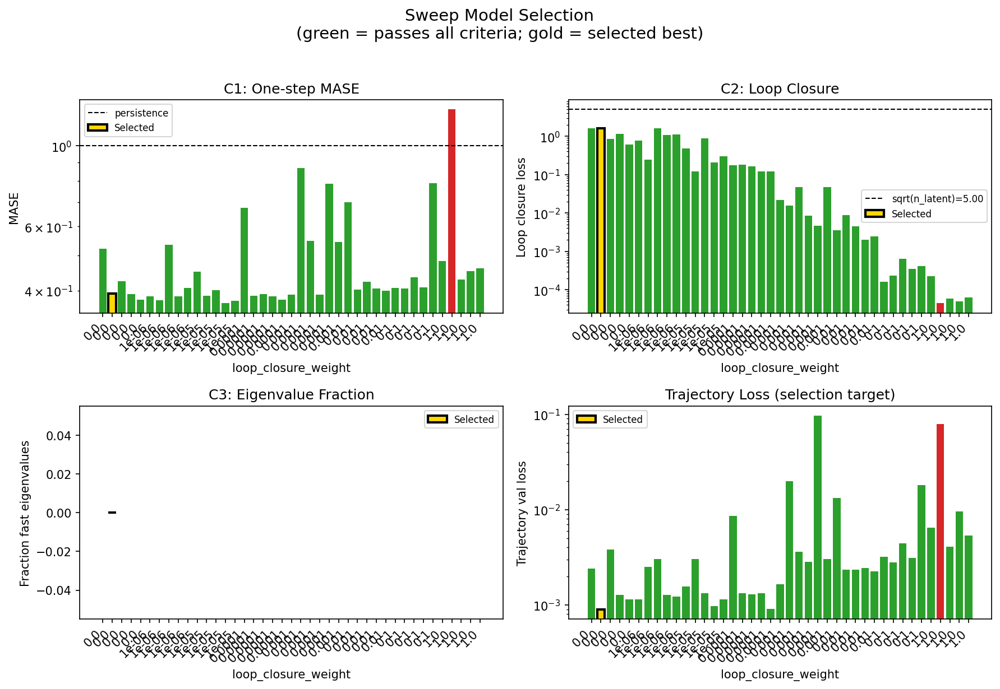
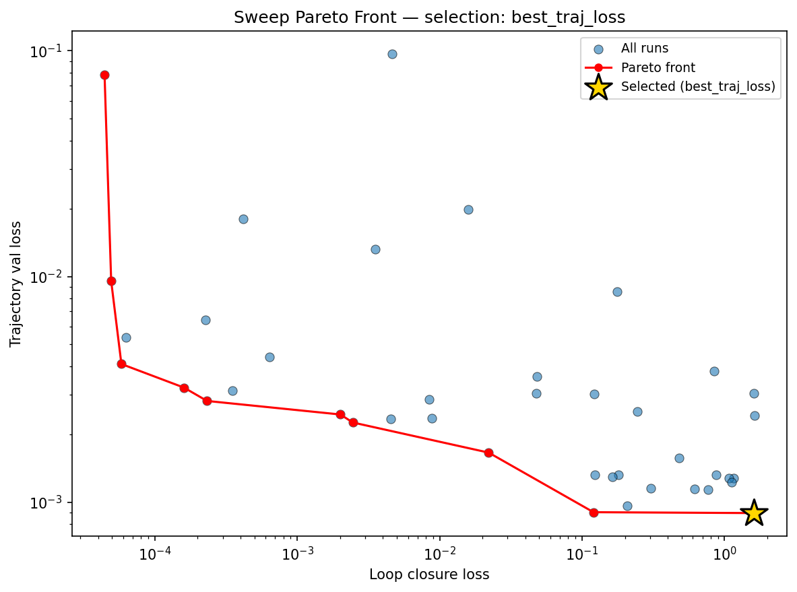
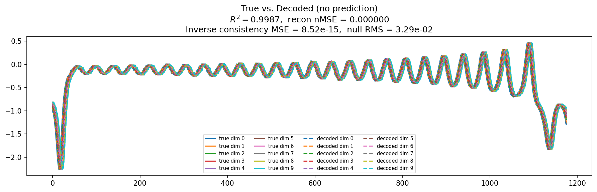
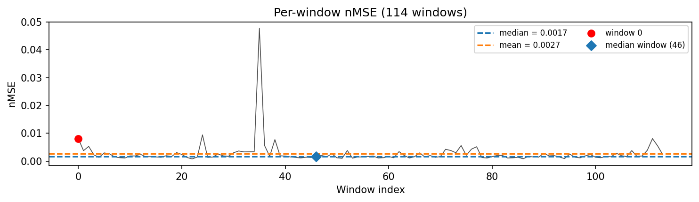
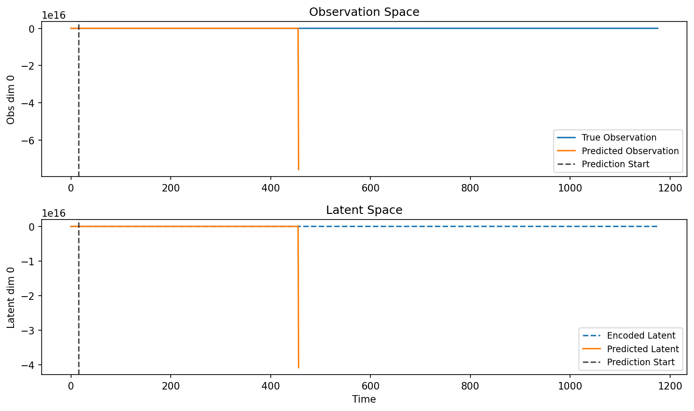
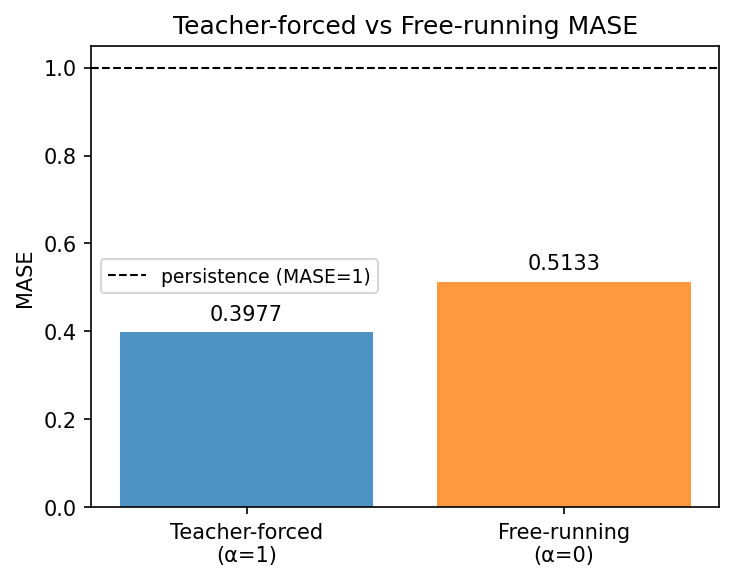
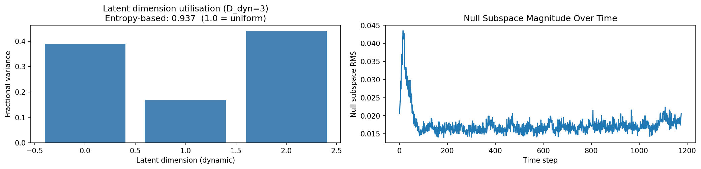
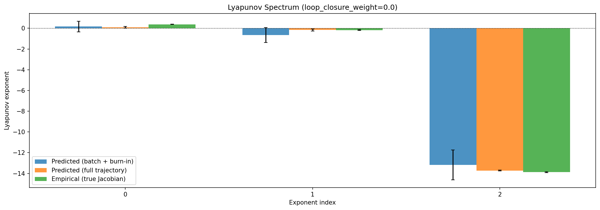
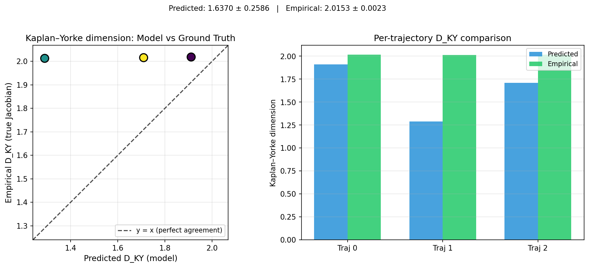
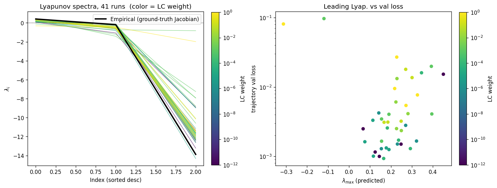
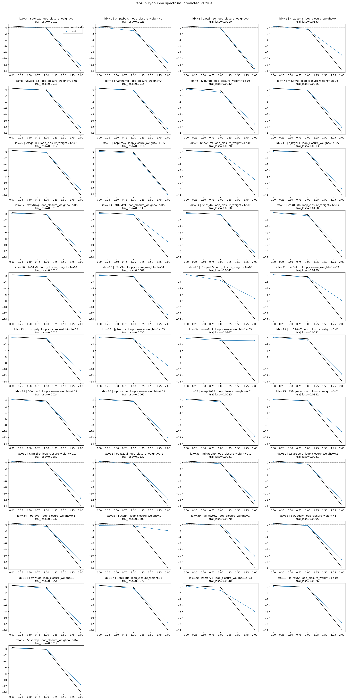
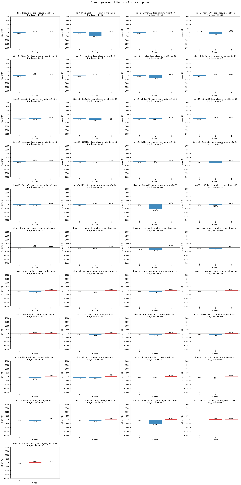
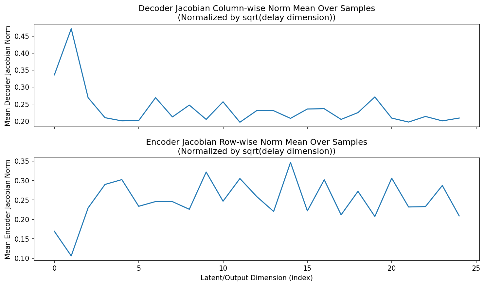
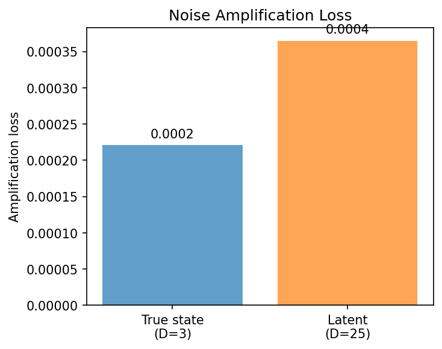
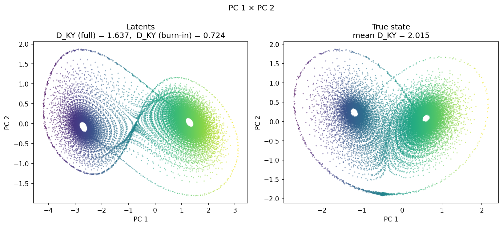
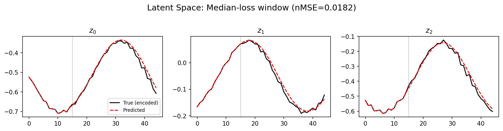
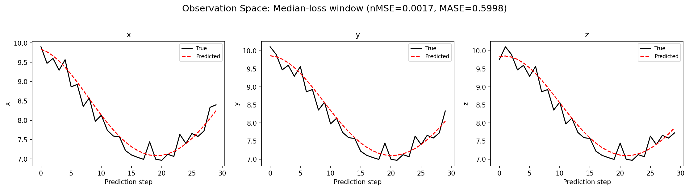
(to be written)
run_analytics stdoutrun_analyticsNo run_id provided — selecting best run from group 'lorenz_partial_25d_additive_mse_uniform_p30_obsnoise001__enchd_lc_sweep' ...
Found 43 total runs in JacobianODE/Lorenz_INDpartial_N25_D1_NormTrue_T3__JacobianODE (group=lorenz_partial_25d_additive_mse_uniform_p30_obsnoise001__enchd_lc_sweep)
All runs (state, loop_closure_weight, tangent_entropy_weight, kl_dyn_weight):
lsg9vpxt: state=finished, lc=0.0, te=0.0, kl_dyn=0.0
0mpwbqk7: state=finished, lc=0.0, te=0.0, kl_dyn=0.0
1wwirh60: state=finished, lc=0.0, te=0.0, kl_dyn=0.0
4nz0p544: state=finished, lc=0.0, te=0.0, kl_dyn=0.0
96wzp7ax: state=finished, lc=1e-06, te=0.0, kl_dyn=0.0
fyzhn6mb: state=finished, lc=0.0, te=0.0, kl_dyn=0.0
lv4lufoq: state=finished, lc=1e-06, te=0.0, kl_dyn=0.0
rha3kf0k: state=finished, lc=1e-06, te=0.0, kl_dyn=0.0
vxsqq8n3: state=finished, lc=1e-06, te=0.0, kl_dyn=0.0
6cp0rz4y: state=finished, lc=1e-05, te=0.0, kl_dyn=0.0
bhrkc679: state=crashed, lc=1e-06, te=0.0, kl_dyn=0.0
njrxgz11: state=finished, lc=1e-05, te=0.0, kl_dyn=0.0
xotytukg: state=finished, lc=1e-05, te=0.0, kl_dyn=0.0
7t07kkzf: state=finished, lc=1e-05, te=0.0, kl_dyn=0.0
r2lznj4b: state=finished, lc=1e-05, te=0.0, kl_dyn=0.0
2d48iu8o: state=finished, lc=0.0001, te=0.0, kl_dyn=0.0
ftu91y8t: state=finished, lc=0.0001, te=0.0, kl_dyn=0.0
ll5xx3rc: state=finished, lc=0.0001, te=0.0, kl_dyn=0.0
sh9njr1h: state=finished, lc=0.0001, te=0.0, kl_dyn=0.0
gbm9ds5t: state=crashed, lc=0.001, te=0.0, kl_dyn=0.0
j8xqwvh5: state=crashed, lc=0.001, te=0.0, kl_dyn=0.0
cat8nkrd: state=finished, lc=0.001, te=0.0, kl_dyn=0.0
bx4cgk4y: state=finished, lc=0.001, te=0.0, kl_dyn=0.0
jy9nxbxe: state=finished, lc=0.001, te=0.0, kl_dyn=0.0
uuso2tr7: state=finished, lc=0.001, te=0.0, kl_dyn=0.0
ufx598w7: state=finished, lc=0.01, te=0.0, kl_dyn=0.0
50nbcet4: state=finished, lc=0.01, te=0.0, kl_dyn=0.0
idpmocmw: state=finished, lc=0.01, te=0.0, kl_dyn=0.0
maqs3088: state=finished, lc=0.01, te=0.0, kl_dyn=0.0
33f4ymvo: state=finished, lc=0.01, te=0.0, kl_dyn=0.0
x4p8zlr9: state=finished, lc=0.1, te=0.0, kl_dyn=0.0
o9aszdui: state=finished, lc=0.1, te=0.0, kl_dyn=0.0
mjx53oh9: state=finished, lc=0.1, te=0.0, kl_dyn=0.0
wsy55cmp: state=finished, lc=0.1, te=0.0, kl_dyn=0.0
i9qfgypj: state=finished, lc=0.1, te=0.0, kl_dyn=0.0
ilucchni: state=finished, lc=1.0, te=0.0, kl_dyn=0.0
ueimwt6w: state=finished, lc=1.0, te=0.0, kl_dyn=0.0
5w7bdslv: state=finished, lc=1.0, te=0.0, kl_dyn=0.0
syjwl5ic: state=finished, lc=1.0, te=0.0, kl_dyn=0.0
x2te15ug: state=finished, lc=1.0, te=0.0, kl_dyn=0.0
z5zzf7v3: state=crashed, lc=0.001, te=0.0, kl_dyn=0.0
joj7z0t2: state=finished, lc=0.0001, te=0.0, kl_dyn=0.0
5px1rlbp: state=finished, lc=0.0001, te=0.0, kl_dyn=0.0
slurm_timeout_min not found in any run config — falling back to 180 min
Including lsg9vpxt (lc=0.0): use_all_runs=True (state=finished)
Including 0mpwbqk7 (lc=0.0): use_all_runs=True (state=finished)
Including 1wwirh60 (lc=0.0): use_all_runs=True (state=finished)
Including 4nz0p544 (lc=0.0): use_all_runs=True (state=finished)
Including 96wzp7ax (lc=1e-06): use_all_runs=True (state=finished)
Including fyzhn6mb (lc=0.0): use_all_runs=True (state=finished)
Including lv4lufoq (lc=1e-06): use_all_runs=True (state=finished)
Including rha3kf0k (lc=1e-06): use_all_runs=True (state=finished)
Including vxsqq8n3 (lc=1e-06): use_all_runs=True (state=finished)
Including 6cp0rz4y (lc=1e-05): use_all_runs=True (state=finished)
Including bhrkc679 (lc=1e-06): use_all_runs=True (state=crashed)
Including njrxgz11 (lc=1e-05): use_all_runs=True (state=finished)
Including xotytukg (lc=1e-05): use_all_runs=True (state=finished)
Including 7t07kkzf (lc=1e-05): use_all_runs=True (state=finished)
Including r2lznj4b (lc=1e-05): use_all_runs=True (state=finished)
Including 2d48iu8o (lc=0.0001): use_all_runs=True (state=finished)
Including ftu91y8t (lc=0.0001): use_all_runs=True (state=finished)
Including ll5xx3rc (lc=0.0001): use_all_runs=True (state=finished)
Including sh9njr1h (lc=0.0001): use_all_runs=True (state=finished)
Including gbm9ds5t (lc=0.001): use_all_runs=True (state=crashed)
Including j8xqwvh5 (lc=0.001): use_all_runs=True (state=crashed)
Including cat8nkrd (lc=0.001): use_all_runs=True (state=finished)
Including bx4cgk4y (lc=0.001): use_all_runs=True (state=finished)
Including jy9nxbxe (lc=0.001): use_all_runs=True (state=finished)
Including uuso2tr7 (lc=0.001): use_all_runs=True (state=finished)
Including ufx598w7 (lc=0.01): use_all_runs=True (state=finished)
Including 50nbcet4 (lc=0.01): use_all_runs=True (state=finished)
Including idpmocmw (lc=0.01): use_all_runs=True (state=finished)
Including maqs3088 (lc=0.01): use_all_runs=True (state=finished)
Including 33f4ymvo (lc=0.01): use_all_runs=True (state=finished)
Including x4p8zlr9 (lc=0.1): use_all_runs=True (state=finished)
Including o9aszdui (lc=0.1): use_all_runs=True (state=finished)
Including mjx53oh9 (lc=0.1): use_all_runs=True (state=finished)
Including wsy55cmp (lc=0.1): use_all_runs=True (state=finished)
Including i9qfgypj (lc=0.1): use_all_runs=True (state=finished)
Including ilucchni (lc=1.0): use_all_runs=True (state=finished)
Including ueimwt6w (lc=1.0): use_all_runs=True (state=finished)
Including 5w7bdslv (lc=1.0): use_all_runs=True (state=finished)
Including syjwl5ic (lc=1.0): use_all_runs=True (state=finished)
Including x2te15ug (lc=1.0): use_all_runs=True (state=finished)
Including z5zzf7v3 (lc=0.001): use_all_runs=True (state=crashed)
Including joj7z0t2 (lc=0.0001): use_all_runs=True (state=finished)
Including 5px1rlbp (lc=0.0001): use_all_runs=True (state=finished)
Found 43 effectively-done sweep runs:
loop_closure_weight=0.0, tangent_entropy_weight=0.0, kl_dyn_weight=0.0 -> run_id=0mpwbqk7
loop_closure_weight=0.0, tangent_entropy_weight=0.0, kl_dyn_weight=0.0 -> run_id=1wwirh60
loop_closure_weight=0.0, tangent_entropy_weight=0.0, kl_dyn_weight=0.0 -> run_id=4nz0p544
loop_closure_weight=0.0, tangent_entropy_weight=0.0, kl_dyn_weight=0.0 -> run_id=fyzhn6mb
loop_closure_weight=0.0, tangent_entropy_weight=0.0, kl_dyn_weight=0.0 -> run_id=lsg9vpxt
loop_closure_weight=1e-06, tangent_entropy_weight=0.0, kl_dyn_weight=0.0 -> run_id=96wzp7ax
loop_closure_weight=1e-06, tangent_entropy_weight=0.0, kl_dyn_weight=0.0 -> run_id=bhrkc679
loop_closure_weight=1e-06, tangent_entropy_weight=0.0, kl_dyn_weight=0.0 -> run_id=lv4lufoq
loop_closure_weight=1e-06, tangent_entropy_weight=0.0, kl_dyn_weight=0.0 -> run_id=rha3kf0k
loop_closure_weight=1e-06, tangent_entropy_weight=0.0, kl_dyn_weight=0.0 -> run_id=vxsqq8n3
loop_closure_weight=1e-05, tangent_entropy_weight=0.0, kl_dyn_weight=0.0 -> run_id=6cp0rz4y
loop_closure_weight=1e-05, tangent_entropy_weight=0.0, kl_dyn_weight=0.0 -> run_id=7t07kkzf
loop_closure_weight=1e-05, tangent_entropy_weight=0.0, kl_dyn_weight=0.0 -> run_id=njrxgz11
loop_closure_weight=1e-05, tangent_entropy_weight=0.0, kl_dyn_weight=0.0 -> run_id=r2lznj4b
loop_closure_weight=1e-05, tangent_entropy_weight=0.0, kl_dyn_weight=0.0 -> run_id=xotytukg
loop_closure_weight=0.0001, tangent_entropy_weight=0.0, kl_dyn_weight=0.0 -> run_id=2d48iu8o
loop_closure_weight=0.0001, tangent_entropy_weight=0.0, kl_dyn_weight=0.0 -> run_id=5px1rlbp
loop_closure_weight=0.0001, tangent_entropy_weight=0.0, kl_dyn_weight=0.0 -> run_id=ftu91y8t
loop_closure_weight=0.0001, tangent_entropy_weight=0.0, kl_dyn_weight=0.0 -> run_id=joj7z0t2
loop_closure_weight=0.0001, tangent_entropy_weight=0.0, kl_dyn_weight=0.0 -> run_id=ll5xx3rc
loop_closure_weight=0.0001, tangent_entropy_weight=0.0, kl_dyn_weight=0.0 -> run_id=sh9njr1h
loop_closure_weight=0.001, tangent_entropy_weight=0.0, kl_dyn_weight=0.0 -> run_id=bx4cgk4y
loop_closure_weight=0.001, tangent_entropy_weight=0.0, kl_dyn_weight=0.0 -> run_id=cat8nkrd
loop_closure_weight=0.001, tangent_entropy_weight=0.0, kl_dyn_weight=0.0 -> run_id=gbm9ds5t
loop_closure_weight=0.001, tangent_entropy_weight=0.0, kl_dyn_weight=0.0 -> run_id=j8xqwvh5
loop_closure_weight=0.001, tangent_entropy_weight=0.0, kl_dyn_weight=0.0 -> run_id=jy9nxbxe
loop_closure_weight=0.001, tangent_entropy_weight=0.0, kl_dyn_weight=0.0 -> run_id=uuso2tr7
loop_closure_weight=0.001, tangent_entropy_weight=0.0, kl_dyn_weight=0.0 -> run_id=z5zzf7v3
loop_closure_weight=0.01, tangent_entropy_weight=0.0, kl_dyn_weight=0.0 -> run_id=33f4ymvo
loop_closure_weight=0.01, tangent_entropy_weight=0.0, kl_dyn_weight=0.0 -> run_id=50nbcet4
loop_closure_weight=0.01, tangent_entropy_weight=0.0, kl_dyn_weight=0.0 -> run_id=idpmocmw
loop_closure_weight=0.01, tangent_entropy_weight=0.0, kl_dyn_weight=0.0 -> run_id=maqs3088
loop_closure_weight=0.01, tangent_entropy_weight=0.0, kl_dyn_weight=0.0 -> run_id=ufx598w7
loop_closure_weight=0.1, tangent_entropy_weight=0.0, kl_dyn_weight=0.0 -> run_id=i9qfgypj
loop_closure_weight=0.1, tangent_entropy_weight=0.0, kl_dyn_weight=0.0 -> run_id=mjx53oh9
loop_closure_weight=0.1, tangent_entropy_weight=0.0, kl_dyn_weight=0.0 -> run_id=o9aszdui
loop_closure_weight=0.1, tangent_entropy_weight=0.0, kl_dyn_weight=0.0 -> run_id=wsy55cmp
loop_closure_weight=0.1, tangent_entropy_weight=0.0, kl_dyn_weight=0.0 -> run_id=x4p8zlr9
loop_closure_weight=1.0, tangent_entropy_weight=0.0, kl_dyn_weight=0.0 -> run_id=5w7bdslv
loop_closure_weight=1.0, tangent_entropy_weight=0.0, kl_dyn_weight=0.0 -> run_id=ilucchni
loop_closure_weight=1.0, tangent_entropy_weight=0.0, kl_dyn_weight=0.0 -> run_id=syjwl5ic
loop_closure_weight=1.0, tangent_entropy_weight=0.0, kl_dyn_weight=0.0 -> run_id=ueimwt6w
loop_closure_weight=1.0, tangent_entropy_weight=0.0, kl_dyn_weight=0.0 -> run_id=x2te15ug
Dropping 2 run(s) with no checkpoint dir: ['sh9njr1h', 'gbm9ds5t']
n_dims=25, n_latent=25, n_dyn=3, dt=0.0150
run=0mpwbqk7: DiagnosticMetrics(one_step_mase=0.5217545628547668, loop_closure_loss=1.6241657733917236, fast_eigenvalue_fraction=0.0, trajectory_val_loss=0.002422568155452609) (from W&B history)
run=1wwirh60: DiagnosticMetrics(one_step_mase=0.3935339152812958, loop_closure_loss=1.6100541353225708, fast_eigenvalue_fraction=0.0, trajectory_val_loss=0.0008947824826464057) (from W&B history)
run=4nz0p544: DiagnosticMetrics(one_step_mase=0.42501354217529297, loop_closure_loss=0.8458001017570496, fast_eigenvalue_fraction=0.0, trajectory_val_loss=0.0038001942448318005) (from W&B history)
run=fyzhn6mb: DiagnosticMetrics(one_step_mase=0.39095765352249146, loop_closure_loss=1.1645786762237549, fast_eigenvalue_fraction=0.0, trajectory_val_loss=0.0012772853951901197) (from W&B history)
run=lsg9vpxt: DiagnosticMetrics(one_step_mase=0.37728819251060486, loop_closure_loss=0.6147653460502625, fast_eigenvalue_fraction=0.0, trajectory_val_loss=0.0011408667778596282) (from W&B history)
run=96wzp7ax: DiagnosticMetrics(one_step_mase=0.3854735493659973, loop_closure_loss=0.7688683867454529, fast_eigenvalue_fraction=0.0, trajectory_val_loss=0.001138719148002565) (from W&B history)
run=bhrkc679: DiagnosticMetrics(one_step_mase=0.37712517380714417, loop_closure_loss=0.24316950142383575, fast_eigenvalue_fraction=0.0, trajectory_val_loss=0.002518994268029928) (from W&B history)
run=lv4lufoq: DiagnosticMetrics(one_step_mase=0.5356078743934631, loop_closure_loss=1.6094849109649658, fast_eigenvalue_fraction=0.0, trajectory_val_loss=0.003028406761586666) (from W&B history)
run=rha3kf0k: DiagnosticMetrics(one_step_mase=0.38616660237312317, loop_closure_loss=1.0760879516601562, fast_eigenvalue_fraction=0.0, trajectory_val_loss=0.001280559110455215) (from W&B history)
run=vxsqq8n3: DiagnosticMetrics(one_step_mase=0.4073794484138489, loop_closure_loss=1.1216003894805908, fast_eigenvalue_fraction=0.0, trajectory_val_loss=0.0012266903650015593) (from W&B history)
run=6cp0rz4y: DiagnosticMetrics(one_step_mase=0.4516511559486389, loop_closure_loss=0.47845402359962463, fast_eigenvalue_fraction=0.0, trajectory_val_loss=0.0015676736366003752) (from W&B history)
run=7t07kkzf: DiagnosticMetrics(one_step_mase=0.3877793252468109, loop_closure_loss=0.12204135209321976, fast_eigenvalue_fraction=0.0, trajectory_val_loss=0.003024458885192871) (from W&B history)
run=njrxgz11: DiagnosticMetrics(one_step_mase=0.40118566155433655, loop_closure_loss=0.878781795501709, fast_eigenvalue_fraction=0.0, trajectory_val_loss=0.001326276338659227) (from W&B history)
run=r2lznj4b: DiagnosticMetrics(one_step_mase=0.3694973289966583, loop_closure_loss=0.20710216462612152, fast_eigenvalue_fraction=0.0, trajectory_val_loss=0.0009654525201767683) (from W&B history)
run=xotytukg: DiagnosticMetrics(one_step_mase=0.37520235776901245, loop_closure_loss=0.3053646385669708, fast_eigenvalue_fraction=0.0, trajectory_val_loss=0.0011509821051731706) (from W&B history)
run=2d48iu8o: DiagnosticMetrics(one_step_mase=0.6747350096702576, loop_closure_loss=0.1755295991897583, fast_eigenvalue_fraction=0.0, trajectory_val_loss=0.008546104654669762) (from W&B history)
run=5px1rlbp: DiagnosticMetrics(one_step_mase=0.38711661100387573, loop_closure_loss=0.18072062730789185, fast_eigenvalue_fraction=0.0, trajectory_val_loss=0.0013222586130723357) (from W&B history)
run=ftu91y8t: DiagnosticMetrics(one_step_mase=0.391697496175766, loop_closure_loss=0.1629897654056549, fast_eigenvalue_fraction=0.0, trajectory_val_loss=0.00129707099404186) (from W&B history)
run=joj7z0t2: DiagnosticMetrics(one_step_mase=0.386638879776001, loop_closure_loss=0.12302810698747635, fast_eigenvalue_fraction=0.0, trajectory_val_loss=0.0013190156314522028) (from W&B history)
run=ll5xx3rc: DiagnosticMetrics(one_step_mase=0.37820422649383545, loop_closure_loss=0.12034718692302704, fast_eigenvalue_fraction=0.0, trajectory_val_loss=0.0009027845226228237) (from W&B history)
run=bx4cgk4y: DiagnosticMetrics(one_step_mase=0.3897989094257355, loop_closure_loss=0.022098904475569725, fast_eigenvalue_fraction=0.0, trajectory_val_loss=0.0016580949304625392) (from W&B history)
run=cat8nkrd: DiagnosticMetrics(one_step_mase=0.8682265877723694, loop_closure_loss=0.015850931406021118, fast_eigenvalue_fraction=0.0, trajectory_val_loss=0.019851338118314743) (from W&B history)
run=j8xqwvh5: DiagnosticMetrics(one_step_mase=0.5480572581291199, loop_closure_loss=0.04801424965262413, fast_eigenvalue_fraction=0.0, trajectory_val_loss=0.0035981156397610903) (from W&B history)
run=jy9nxbxe: DiagnosticMetrics(one_step_mase=0.38951653242111206, loop_closure_loss=0.008470424450933933, fast_eigenvalue_fraction=0.0, trajectory_val_loss=0.0028486058581620455) (from W&B history)
run=uuso2tr7: DiagnosticMetrics(one_step_mase=0.7862730622291565, loop_closure_loss=0.004632106516510248, fast_eigenvalue_fraction=0.0, trajectory_val_loss=0.09673088043928146) (from W&B history)
run=z5zzf7v3: DiagnosticMetrics(one_step_mase=0.5452226996421814, loop_closure_loss=0.04756515473127365, fast_eigenvalue_fraction=0.0, trajectory_val_loss=0.0030430322512984276) (from W&B history)
run=33f4ymvo: DiagnosticMetrics(one_step_mase=0.6988587379455566, loop_closure_loss=0.0035228740889579058, fast_eigenvalue_fraction=0.0, trajectory_val_loss=0.013225925154983997) (from W&B history)
run=50nbcet4: DiagnosticMetrics(one_step_mase=0.40340498089790344, loop_closure_loss=0.008795131929218769, fast_eigenvalue_fraction=0.0, trajectory_val_loss=0.002356510842218995) (from W&B history)
run=idpmocmw: DiagnosticMetrics(one_step_mase=0.42371314764022827, loop_closure_loss=0.0045555345714092255, fast_eigenvalue_fraction=0.0, trajectory_val_loss=0.002340043894946575) (from W&B history)
run=maqs3088: DiagnosticMetrics(one_step_mase=0.40615275502204895, loop_closure_loss=0.0020099254325032234, fast_eigenvalue_fraction=0.0, trajectory_val_loss=0.0024464766029268503) (from W&B history)
run=ufx598w7: DiagnosticMetrics(one_step_mase=0.3992995619773865, loop_closure_loss=0.0024546498898416758, fast_eigenvalue_fraction=0.0, trajectory_val_loss=0.002254910534247756) (from W&B history)
run=i9qfgypj: DiagnosticMetrics(one_step_mase=0.406982421875, loop_closure_loss=0.00016031588893383741, fast_eigenvalue_fraction=0.0, trajectory_val_loss=0.0032183644361793995) (from W&B history)
run=mjx53oh9: DiagnosticMetrics(one_step_mase=0.40514156222343445, loop_closure_loss=0.00023292795231100172, fast_eigenvalue_fraction=0.0, trajectory_val_loss=0.0028087878599762917) (from W&B history)
run=o9aszdui: DiagnosticMetrics(one_step_mase=0.43560975790023804, loop_closure_loss=0.0006371282506734133, fast_eigenvalue_fraction=0.0, trajectory_val_loss=0.004404474049806595) (from W&B history)
run=wsy55cmp: DiagnosticMetrics(one_step_mase=0.4078247547149658, loop_closure_loss=0.0003494429693091661, fast_eigenvalue_fraction=0.0, trajectory_val_loss=0.0031193182803690434) (from W&B history)
run=x4p8zlr9: DiagnosticMetrics(one_step_mase=0.7893850207328796, loop_closure_loss=0.00041640247218310833, fast_eigenvalue_fraction=0.0, trajectory_val_loss=0.01798124983906746) (from W&B history)
run=5w7bdslv: DiagnosticMetrics(one_step_mase=0.4823963940143585, loop_closure_loss=0.00022746999457012862, fast_eigenvalue_fraction=0.0, trajectory_val_loss=0.006437171250581741) (from W&B history)
run=ilucchni: DiagnosticMetrics(one_step_mase=1.25845468044281, loop_closure_loss=4.4378630263963714e-05, fast_eigenvalue_fraction=0.0, trajectory_val_loss=0.07855549454689026) (from W&B history)
run=syjwl5ic: DiagnosticMetrics(one_step_mase=0.4292369782924652, loop_closure_loss=5.8287045249016955e-05, fast_eigenvalue_fraction=0.0, trajectory_val_loss=0.004094111267477274) (from W&B history)
run=ueimwt6w: DiagnosticMetrics(one_step_mase=0.45281505584716797, loop_closure_loss=4.939811697113328e-05, fast_eigenvalue_fraction=0.0, trajectory_val_loss=0.009544222615659237) (from W&B history)
run=x2te15ug: DiagnosticMetrics(one_step_mase=0.4604220986366272, loop_closure_loss=6.245687836781144e-05, fast_eigenvalue_fraction=0.0, trajectory_val_loss=0.005356785841286182) (from W&B history)
Ranking method: best_traj_loss
Best run ID: 1wwirh60
Best loop_closure_weight: 0.0
Best tangent_entropy_weight: 0.0
Best kl_dyn_weight: 0.0
Best traj loss: 0.000895
Criteria applied: ['C1', 'C2', 'C3']
Surviving: 40 / 41
Auto-selected run_id: 1wwirh60
======================================================================
PARETO FRONTIER RUNS (10 runs)
======================================================================
Run ID LC Loss Traj Val Loss
------------ -------------- --------------
ilucchni 0.000044 0.078555
ueimwt6w 0.000049 0.009544
syjwl5ic 0.000058 0.004094
i9qfgypj 0.000160 0.003218
mjx53oh9 0.000233 0.002809
maqs3088 0.002010 0.002446
ufx598w7 0.002455 0.002255
bx4cgk4y 0.022099 0.001658
ll5xx3rc 0.120347 0.000903
1wwirh60 1.610054 0.000895 <-- selected
======================================================================
RANKING METHOD COMPARISON (over 40 survivors)
======================================================================
Method Run ID LC Loss Traj Val Loss
---------------------- ------------ -------------- --------------
best_traj_loss 1wwirh60 1.610054 0.000895 <-- active
pareto_knee ll5xx3rc 0.120347 0.000903
geo_rank ueimwt6w 0.000049 0.009544
minimax_rank ufx598w7 0.002455 0.002255
geo_log_score 1wwirh60 1.610054 0.000895
minimax_log_score mjx53oh9 0.000233 0.002809
======================================================================
Loading run 1wwirh60 from JacobianODE/Lorenz_INDpartial_N25_D1_NormTrue_T3__JacobianODE ...
Train dataset shape: torch.Size([24882, 45, 25])
Validation dataset shape: torch.Size([7917, 45, 25])
Test dataset shape: torch.Size([3393, 45, 25])
Train trajectories dataset shape: torch.Size([22, 1176, 25])
Validation trajectories dataset shape: torch.Size([7, 1176, 25])
Test trajectories dataset shape: torch.Size([3, 1176, 25])
Loading checkpoint epoch=165-step=33200.ckpt...
Computing reconstruction ...
Computing MASE ...
Teacher-forced MASE: 0.3977
Free-running MASE: 0.5133
Computing latent utilization ...
Entropy-based utilization: 0.937
Null subspace mean RMS: 1.789580e-02
Computing Lyapunov exponents ...
Computing full-trajectory Lyapunov (3 test trajs, T=1176) ...
Predicted Lyapunov exponents (batch+burn-in, 128 windowed trajs):
λ_1 = +0.1693 ± 0.5056
λ_2 = -0.6494 ± 0.7181
λ_3 = -13.1816 ± 1.4280
Predicted Lyapunov exponents (full-length, 3 test trajs):
λ_1 = +0.1050 ± 0.0830
λ_2 = -0.1683 ± 0.1016
λ_3 = -13.7312 ± 0.0455
Empirical Lyapunov exponents (mean ± std):
λ_1 = +0.3846 ± 0.0251
λ_2 = -0.1716 ± 0.0444
λ_3 = -13.8799 ± 0.0398
Mean KY dim (predicted): 1.637 ± 0.259
Mean KY dim (empirical): 2.015 ± 0.002
Mean KY dim (burn-in): 0.724 ± 0.753
Computing prediction windows ...
Windows: 114 — nMSE min=0.0008, median=0.0017, mean=0.0027, max=0.0477
Computing long trajectory prediction ...
Computing encoder/decoder Jacobians ...
encoder_jacobian: (128, 25, 25)
decoder_jacobian: (128, 25, 25)
Computing amplification loss ...
Amplification loss — True state: 0.000221
Amplification loss — Latent: 0.000365